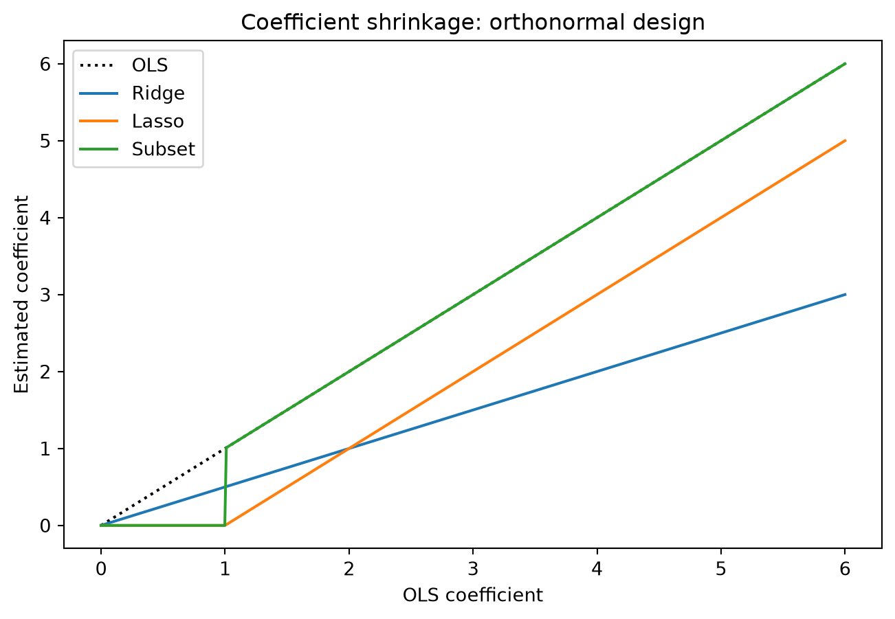
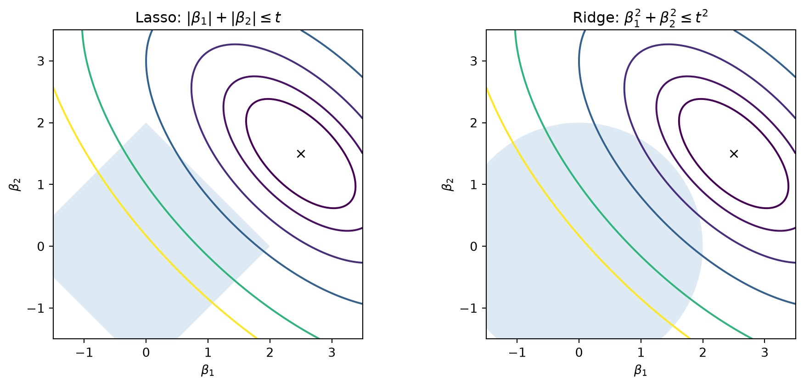
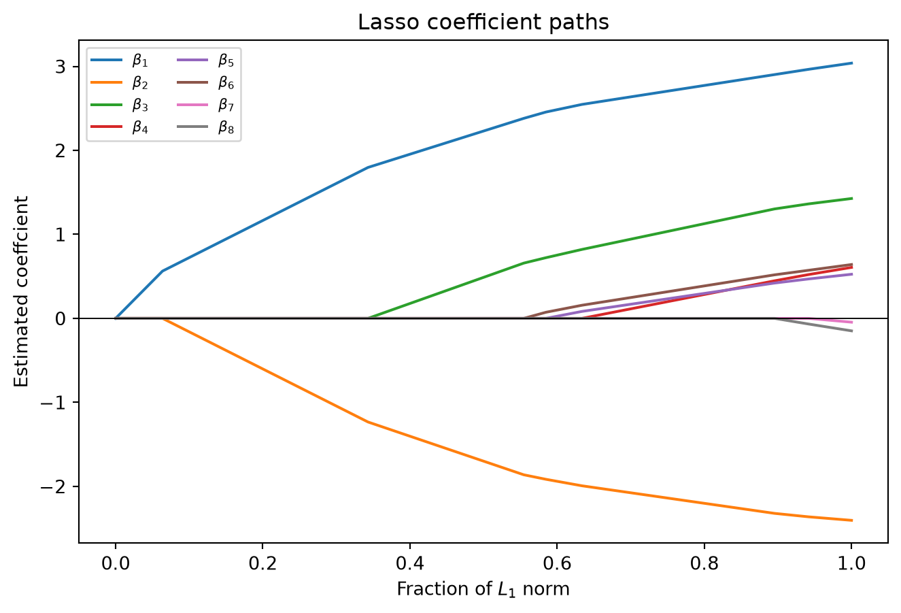
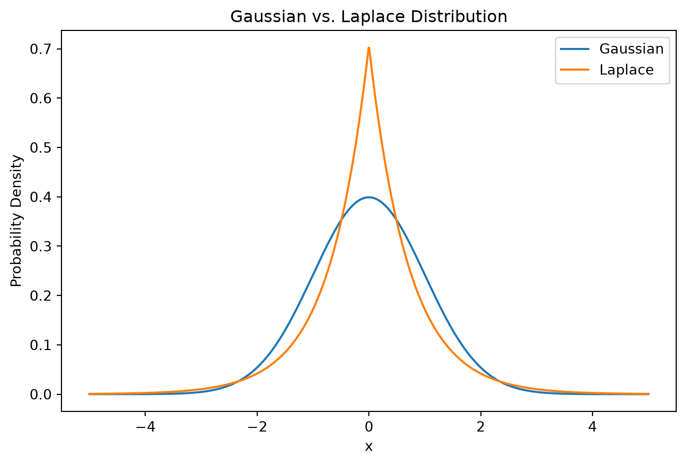

flowchart TD
A["Least-squares estimation"]
B["Add a constraint on coefficients"]
C["L2: sum of squared coefficients"]
D["L1: sum of absolute coefficients"]
E["L0: number of nonzero coefficients"]
F["Ridge: continuous shrinkage"]
G["Lasso: shrinkage and exact zeros"]
H["Best subset: discrete selection"]
A --> B
B --> C
B --> D
B --> E
C --> F
D --> G
E --> H
10 Lasso Regression
This chapter develops the lasso and elastic net as extensions of the regularization framework. The discussion follows Tibshirani (1996), Tibshirani (2011), and Zou and Hastie (2005), with proofs and visualizations accompanying the principal results.
1 From Ridge Regression to the Lasso
1.1 Changing the structure of the constraint
Ridge regression demonstrates how imposing a restriction on the coefficient vector can improve the stability and prediction accuracy of a linear model. As established previously, the quadratic penalty stabilizes estimation by reducing the influence of directions associated with small eigenvalues of \(X^\top X\). It generally produces smaller, more stable coefficients at the expense of introducing bias. However, reducing the magnitudes of coefficients does not necessarily produce a simpler model in terms of the number of predictors. Ridge regression retains every predictor, even when some contribute little to explaning the response.
Suppose, instead that we want an estimator that can both control coefficient magnitudes and identify a smaller subset of relevant predictors. One possibilty is best subset selection, which solves
\[ \min_\beta ||y-X\beta||_2^2 \quad \text{subject to } ||\beta||_0 \leq k, \]
where \(|| \beta||_0 = \#\{j:\beta_j \neq 0\}\) counts the number of nonzero coefficients.
This formulation directly controls model complexity, but introduces a combinatorial optimization problem. For \(p\) predictors, there are \(2^p\) possible subsets. Moreover, selection is discrete: a small perturbation of the observations may cause a predictor to be either included or excluded, leading to considerable instability. We therefore seek a constraint that encourages sparsity while retaining the convexity and continuous optimization structure.
The central idea is to replace the quadratic constraint with a constraint on absolute coefficient magnitudes:
\[ \sum_{j=1}^p \beta_j^2 \leq t \implies \sum_{j=1}^p |\beta_j|\leq t \]
This gives the least absolute shrinkage and selection operator, or lasso, introduces by Tibshirani (1996).
The relationship can be expressed through a broader family of bridge penalties,
\[ J_q (\beta) =\sum_{j=1}^p |\beta_j|^q . \]
Ridge regression corresponds to \(q=2\), the lasso corresponds to \(q=1\), and the formal limiting case as \(q\to 0^+\) approaches the number of nonzero coefficients for a fixed coefficient vector. Among penalties of this form, \(q=1\) is the smallest exponent that preserves convexity.
1.2 Definition of the lasso estimator
Consider observations \((x_i, y_i)\), \(i=1, \ldots, n\) with \(p\) predictors. We write \(y=X\beta + \epsilon\), where \(X=(x_1|\ldots |x_p)\) is the design matrix and \(x_j\in R^n\) denotes the \(j\)th predictor column. For the subsequent derivations, assume that the response is centered and the predictors are centered and standardized:
\[ \sum_{i=1}^n y_i = 0, \quad \sum_{i=1}^n x_ij = 0, \quad \sum_{i=1}^n x_{ij}^2 = 1. \]
This is the normalization used by Zou and Hastie (2005). Tibshirani (1996) instead standardizes each predictor to have empirical variance 1; the difference is a scaling convention. The formulas below use \(x_j^\top x_j = 1\) when standardization is required.
Definition 1 (Lasso estimator) For \(t\geq 0\), the lasso estimator is
\[ \hat \beta(t) = \arg\min_{\beta\in \R^p} ||y-X\beta||_2^2 \quad \text{subject to } || \beta||_1 \leq t, \]
where \(||\beta||_1 = \sum_{j=1}^p |\beta_j|\)
In the orginal formulation, the intercept is not penalized. If it is included, the objective becomes
\[ \min_{\beta_0, \beta} \sum_{i=1}^n \left(y_i -\beta_0 -\sum_{j=1}^p x_{ij}\beta_j \right)^2 \]
subject to \(||\beta||_1 \leq t\). Centering the response and predictors give \(\hat \beta_0 = \overline{y}\), allowing the intercept to be ommited from the subsequent analysis.
The tuning parameter \(t\) determines the size of the feasible region. When \(t=0\), the only admissible coefficeint vector is zero. Increasing \(t\) enlarges the feasible region, allowing increasiling complex models.
If the least-squares coefficient vector is unique, we can define \(t_0 = || \hat \beta^{\text{OLS}}||_1\). For \(t\geq t_0\), the OLS solution satisfies the constraint and remains optimal. For \(t< t_0\), the contraint becomes active and produces coefficient shrinkage.
The constraint also has an equivalent penalized representation.
Proposition 1 (Penalized lasso) A solution of the contrained problem can be obtained, for an appropriate Lagrange multiplier \(\lambda\geq 0\), by minimizing
\[ L(\beta; \lambda) = ||y-X\beta||_2^2 + \lambda||\beta||_1 \tag{1}\]
Conversely, a minimizer of Equation 1 solves the constrained problem with \(t=||\hat \beta||_1\).
Proof. Introduce the Lagrangian
\[ \mathcal L(\beta, \lambda) = ||y-X\beta||_2^2 + \lambda(||\beta||_1-t), \quad \lambda \geq 0 \]
For fixed \(\lambda\), the term \(-\lambda t\) does not depend on \(\beta\). Therefore,
\[ \arg\min_\beta\mathcal L(\beta, \lambda) = \arg\min_\beta \{||y-X\beta||_2^2 +\lambda||\beta||_1\}. \]
The KKT complementary slackness condition is
\[ \lambda(||\hat \beta||_1-t) = 0 \]
When the constraint is active, the multiplier coefficient magnitudes strongly enough to enforce the require bound. Convexity makes the KKT conditions sufficient for optimality. The reverse statement follows by selecting the constraint radius equal to the norm of a penalized minimizer.
The two formulations describe the same family of estimators, although the mapping between \(t\) and \(\lambda\) need not be one-to-one. In the constrained formulation, smaller values of \(t\) impose stronger regularization. In the penalized formulation, larger values of \(\lambda\) impose stronger regularization.
1.3 Convexity and the mechanism of variable selection
The lasso objective is convex because both the squared-error loss and the absolute-value penalty are convex. However, unlike ridge regression, the penalty is not differentiable at zero.
Recall that
\[ \frac{d}{d\beta_j} |\beta_j| = \begin{cases} 1,& \beta_j > 0 \\ -1,& \beta_j < 0 \end{cases} \]
while the derivatives is undefined at \(\beta_j = 0\).
Convex optimization handles this through the subdifferential,
\[ \partial |\beta_j| = \begin{cases} \{1\}, & \beta_j > 0 \\ [-1, 1], & \beta_j = 0 \\ \{-1\}, & \beta_j < 0 . \end{cases} \]
The interval at zero creates a range of residual correlations for which a zero coefficient satisfies the optimality conditions.
Theorem 1 Let \(\hat \beta\) minimize Equation 1, and define the residual vector
\[ r = y-X\hat \beta. \]
Then, for each \(j=1, \ldots, p\),
\[ \begin{aligned} 2x_j^\top r = \lambda\, \mathrm{sign}(\hat \beta_j),& \quad \hat \beta_j \neq 0 \\ |2x_j^\top r| \leq \lambda,& \quad \hat \beta_j = 0 \end{aligned} \]
These conditions are necessary and sufficient for optimality.
Proof. The differentiable part of the objective has gradient
\[ \nabla_\beta ||y-X\beta||_2^2 = -2X^\top (y-X\beta). \]
Since the full objective is convex, a vector \(\hat \beta\) is optimal if and only if
\[ 0 \in -2X^\top (y-X\hat \beta) + \lambda \partial||\hat \beta||_1 \]
Thus, for every coordinate,
\[ 2x_j^\top r \in \lambda \partial |\hat \beta_j|. \]
When \(\hat \beta_j\neq 0\), its subgradient contains only \(\mathrm{sign}(\hat \beta_j)\), giving the equality conidition.
When \(\hat \beta_j=0\), the subgradient is the interval \([-1, 1]\), giving
\[ -\lambda \leq 2x_j^\top r \leq \lambda \]
Both conditions together establish the result.
A coefficient can therefore remain zero whenever
\[ |x_j^\top r| \leq \frac{\lambda}{2}. \]
This is a crucial difference from ridge regression. For ridge, stationarity requires
\[ -2X^\top (y-X\hat \beta) + 2\lambda \hat \beta = 0 \]
There is no interval of admissible gradients at zero. Ridge continuously shrinks coefficients but does not possess a comparable thresholding mechanism. The lasso, by contrast, can eliminate predictors entirely because the nondifferentiability of the \(L_1\)-penalty creates a region in which zero is an optimal solution.
2 Geometry and Mathematical Properties of the Lasso
2.1 Orthonormal design and soft thresholding
The behavior of the lasso is easy to understand when the predictors are orthonormal:
\[ X^\top X = I_p \]
Under this assumption,
\[ \hat \beta^{\text{OLS}} = X^\top y. \]
Expanding the squared-error criterion gives
\[ \begin{aligned} ||y-X\beta||_2^2 &= y^\top y - 2\beta^\top X^\top y + \beta^\top X^\top X\beta \\ &= y^\top y - 2\beta^\top \hat \beta^{\text{OLS}} + \beta^\top \beta \\ &= \text{constant} + \sum_{j=1}^p (\beta_j - \hat \beta_j^{\text{OLS}})^2. \end{aligned} \]
Consequently, the lasso objective separates across coordinates
\[ L(\beta; \lambda) = \text{constant} + \sum_{j=1}^p \left[(\beta_j - \hat\beta_j^{\text{OLS}})^2 + \lambda|\beta_j|\right]. \]
Each coefficient can be estimated independently.
Theorem 2 (Soft-thresholding estimator) Under \(X^\top X=I_p\),
\[ \hat \beta_j^{\text{lasso}} = \mathrm{sign}(\hat \beta_j^\text{OLS})\left(|\hat \beta_j^{\text{OLS}}|-\frac{\lambda}{2}\right)_{+}, \]
where \((a)_+ = \max(a, 0)\).
Proof. Let \(z = \hat \beta_j^{\text{OLS}}\). The corresponding scalar optimization problem is
\[ \min_b \{(b-z)^2 +\lambda|b|\}. \]
For \(b>0\), differentiating yields
\[ 2(b-z) + \lambda = 0, \]
so \(b=z-\frac{\lambda}{2}\). This is positive only \(z>\frac{\lambda}{2}\). For \(b< 0\),
\[ 2(b-z) - \lambda = 0 \]
giving \(b= z+\frac{\lambda}{2}\), which is negative only if \(z<-\lambda/2\). Finally, at \(b=0\), the subgradient condition is
\[ 0 \in -2z + \lambda[-1, 1] \]
This holds precisely when \(|z|\leq \lambda/2\). Thus,
\[ \hat \beta = \begin{cases} z-\lambda/2, & z> \lambda/2, \\ 0,& |z| \leq \lambda/2, \\ z+\lambda/2, & z< -\lambda/2. \end{cases} \]
Combining the cases gives the stated formula.
We can define the soft-thresholding operator:
\[ S(z, \tau) = \mathrm{sign}(z)(|z| - \tau)_{+}. \]
Then
\[ \hat \beta_j^{\text{lasso}} = S(\hat\beta_j^{OLS}, \lambda/2) \]
In the original constrained formulation, Tibshirani (1996) write the solution as
\[ \hat \beta_j = \mathrm{sign}(\hat \beta_j^\text{OLS})(|\hat \beta_j^{\text{OLS}}| - \gamma)_{+}, \]
where \(\gamma\) is selected so that \(\sum_j |\hat \beta_j|=t\) when the constraint is active. The behavior is different from ridge regression, which under the same orthonormality assumption satisfies
\[ \hat \beta_j^{\text{ridge}} = \frac{\hat \beta_j^{\text{OLS}}}{1+\lambda_2} \]
Ridge regression scales all the coefficeints by the same multiplicative factor. The lasso instead subtracts a common threshold from their absolute values and truncates coefficients that become nonpositive.
View Python code
import numpy as np
import matplotlib.pyplot as plt
z = np.linspace(0, 6, 500)
threshold = 1.0
ols = z
ridge = z/2
lasso = np.maximum(z-threshold, 0)
subset = np.where(z> threshold, z, 0)
fig, ax = plt.subplots(figsize=(8,5))
ax.plot(z, ols, "k:", label="OLS")
ax.plot(z, ridge, label="Ridge")
ax.plot(z, lasso, label="Lasso")
ax.plot(z, subset, label="Subset")
ax.set(xlabel="OLS coefficient", ylabel="Estimated coefficient", title="Coefficient shrinkage: orthonormal design")
ax.legend()
plt.show()
As we can see, ridge regression continuously shrinks all coefficients, whereas best subset selection creates a discontinuous decision to retain or remove a coefficient. The lasso both shrinks and select, but does so through a continuous soft-thresholding function.
2.2 Geometry of the constraint
Assume temporarily that \(X^\top X\) is invertible. By the least-quares normal equations,
\[ X^\top (y-X\hat \beta^{\text{OLS}}) = 0 \]
We can therefore expand the rsidual sum of squares around the OLS estimator:
\[ ||y-X\beta||_2^2 = ||y-X\hat \beta^{\text{OLS}}||_2^2 + (\beta- \hat \beta^{\text{OLS}})^\top X^\top X (\beta - \hat \beta^{\text{OLS}}). \]
The first term does not depend on \(\beta\). The second term is a quadratic from centered at the OLS solution, so its level sets are ellipsoids in coefficient space.
For two predictors, the lasso feasible region is
\[ |\beta_1| +|\beta_2| \leq t \]
Its boundary is a diamond with corners on the coordinate axes. By comparison, the ridge constraint
\[ \beta_1^2 +\beta_2^2 \leq t^2 \]
defines a circular region.
In both methods, the constrained solution is the point where the smallest attainable least-squares ellipsoid intersects the feasible region. The lasso diamond has corners at which one or more coefficients are zero. Consequently, an ellipsodial contour can first contact the region at a corner, producing a sparse solution. The ridge region has a smooth boundary, making an exact zero less likely.
View Python code
b1 = np.linspace(-1.5, 3.5, 400)
b2 = np.linspace(-1.5, 3.5, 400)
B1, B2 = np.meshgrid(b1, b2)
beta_ols = np.array([2.5, 1.5])
rho = 0.6
G = np.array([[1, rho], [rho, 1]])
D = np.stack([B1 - beta_ols[0], B2 - beta_ols[1]], axis=-1)
loss = np.einsum("...i,ij,...j->...", D, G, D)
t = 2.0
theta = np.linspace(0, 2*np.pi, 400)
fig, axes = plt.subplots(1, 2, figsize=(10, 4.5))
for ax in axes:
ax.contour(B1, B2, loss, levels=[0.5, 1, 2, 4, 8, 12])
ax.plot(*beta_ols, "kx", label="OLS")
ax.set(xlabel=r"$\beta_1$", ylabel=r"$\beta_2$")
ax.set_aspect("equal")
ax.set_xlim(-1.5, 3.5)
ax.set_ylim(-1.5, 3.5)
axes[0].fill([t, 0, -t, 0], [0, t, 0, -t], alpha=0.15)
axes[0].set_title(r"Lasso: $|\beta_1| + |\beta_2| \leq t$")
axes[1].fill(t*np.cos(theta), t*np.sin(theta), alpha=0.15)
axes[1].set_title(r"Ridge: $\beta_1^2 +\beta_2^2\leq t^2$")
plt.tight_layout()
plt.show()
The \(L_1\)-ball is a convex polytope with vertices and lower-dimensional faces aligned with coordinate subspaces. Optimization over these faces can produce several coefficient equal to zero simultaneously.
In the general correlated setting, the lasso solution depends jointly on all predictors. Tibshirani (1996) shows that for \(p>2\), a coefficient can even change sign relative to its OLS estimate. The estimator is therefore determined by the full geometry of \(X^\top X\), rather than by separate transformations of the OLS coefficients.
2.3 The two-predictor case
Consider a case when there are two standardize predictors with correlation
\[ x_1^\top x_2 = \rho, \quad |\rho| < 1 \]
Suppose that the two OLS coefficients are positive and that the lasso solution remains in the positive quadrant.
Proposition 2 (Equal coefficient reduction) While both lasso coefficients are positive and the \(L_1\)-constraint is active,
\[ \hat \beta_j =\hat \beta_j^\text{OLS} - \frac{\hat \beta_1^{\text{OLS}} + \hat \beta_2^\text{OLS} - t}{2}, \quad j =1, 2. \]
In particular, for a fixed constraint \(t\), the reduction does not depend on \(\rho\), provided the solution remains on this part of the constraint boundary.
Proof. Under the assumed signs, the active constraint becomes \(\beta_1 + \beta_2 = t\). The Lagrangian first-order condition gives
\[ 2X^\top X (\hat \beta - \hat \beta^{\text{OLS}}) + \nu\begin{pmatrix}1 \\ 1 \end{pmatrix} = 0 . \]
Since \(X^\top X= \begin{pmatrix}1 & \rho \\ \rho & 1\end{pmatrix}\), we have
\[ (X^\top X)^{-1} \begin{pmatrix}1 \\ 1\end{pmatrix} =\frac{1}{1+\rho} \begin{pmatrix} 1 \\1 \end{pmatrix} \]
Consequently,
\[ \hat \beta - \hat \beta^{\text{OLS}} = -\frac{\nu}{2(1+\rho)} \begin{pmatrix}1\\1\end{pmatrix} \]
Thus the two coefficients are reduced by an equal amount, say \(c\). Applying the constraint,
\[ \hat \beta_1^{\text{OLS}} + \hat \beta_2^{\text{OLS}} -2c = t, \]
so
\[ c = \frac{\hat \beta_1^{\text{OLS}}+ \beta_2^{\text{OLS}}-t}{2} \]
Substitution establishes the result.
This differs from ridge regression, whose shrinkage depends on the eigenstructure of \(X^\top X\). As \(\rho\) increases, ridge tends to shrink the difference between the coefficients more strongly, encouraging similar coefficients for highly correlated predictors.
2.4 Existence, uniqueness, and sparsity
Unlike OLS, the penalized lasso problem with \(\lambda > 0\) has a minimizer even when the design matrix is a rank deficient. The objective is continuous, convex, and grows without bound as \(||\beta||_1\to \infty\). Existence, however, does not imply that the coefficient vector is unique.
Theorem 3 (Uniqueness of fitted values) If \(\hat \beta^{(1)}\) and \(\hat \beta^{(2)}\) are two lasso minimizers for the same \(\lambda>0\), then
\[ X\hat \beta^{(1)} = X\hat \beta^{(2)}. \]
Proof. Suppose the fitted values are different. Consider
\[ \overline \beta = \frac{\hat \beta^{(1)} + \hat \beta^{(2)}}{2} \]
Because squared error is strictly convex in the fitted-value vector,
\[ ||y-X\overline \beta||_2^2 < \frac{1}{2} ||y-X\hat \beta^{(1)}||_2^2 + \frac{1}{2}||y-X\hat \beta^{(2)}||_2^2 \]
Convexity of the \(L_1\)-norm gives
\[ ||\overline \beta||_1 \leq \frac{1}{2} \left(||\hat \beta^{(1)}||_1 + ||\hat \beta^{(2)}||_1\right). \]
Combining the two inequalities produces an objective value at \(\overline \beta\) strictly smaller than the minimum, which is a contradction. Hence the fitted values must agree.
When \(X\) has full column rank, the quadratic term is strictly convex in \(\beta\), so the coefficient is unique as well. When \(p>n\), multiple coefficient vectors can yield the same predictions. A related property concerns the number of predictors that can be selected.
Proposition 3 (Sprase minimizer) For \(\lambda>0\), there exists a lasso minimizer having at most \(\rank(X)\) nonzero coefficients.
Proof. Let \(A\) denote the active set of a lasso solution. Suppose \(|A| > \rank(X)\). The columns of \(X_A\) are linearly dependent, so there exists a nonzero vector \(d\) satisfying \(X_A d=0\)
The active-coordinate optimality equations give
\[ 2X_A^\top r = \lambda s_A, \]
where \(s_A\) is the sign vector of the active coefficients. Multiplication by \(d^\top\) yields
\[ 0 = 2d^\top X_A^\top r = \lambda d^\top s_A \]
Since \(\lambda>0\), we obtain \(d^\top s_A = 0.\)
Now perturb the active coefficients according to
\[ \beta_A(u) =\hat \beta_A + ud. \]
Because \(X_a d=0\), this pertubation leaves the fitted values unchanged. As long as the signs of the active coefficients remain fixed,
\[ ||\beta_A(u)||_1 = ||\hat \beta_A||_1 + us_A^\top d = ||\hat \beta_A||_1. \]
Thus the objective remains unchanged. We can move along this direction until at least one active coefficient reaches zero. Repeating the argument eventually produces a minimizer whose active columns are linearly independent. Therefore,
\[ |A|\leq \rank(X). \]
This result explains that the lasso selects no more than \(n\) predictors when \(p>n\). More precisely, it guarantees the existence of a sparse minimizer, nonunique lasso solutions may have larger supports.
A final structural property follows from the optimality equations. Let \(A\) be an active set whose columns are linearly independent, and suppose the signs \(s_A\) remain fixed. Then
\[ 2X_A^\top(y-X_A \hat \beta_a) = \lambda s_A. \]
Rearranging gives
\[ \hat \beta_A (\lambda) = (X_A^\top X_A)^{-1}(X_A^\top y - \frac{\lambda}{2} s_A) \]
For a fixed active set and sign vector, this is an affine function of \(\lambda\). As the penalty changes, the coefficient path follows linear segments separated by events at which predictors enter or leave the active set. This piecewise-linear structure provides the theoretical basis for path-following algorithms such as least-angle regression and homotopy methods, discussed in Tibshirani (2011).
3 Computation, Prediction Error, and Statistical Interpretation
3.1 Computing the lasso estimator
The lasso is convex optimization problem, but the nondifferentiability of the \(L_1\)-penalty prevents the direct application of the OLS normal equations. In particular, there is no general closed-form estimator analogous to
\[ \hat \beta^{\text{ridge}} = (X^\top X + \lambda I)^{-1}X^{\top}y \]
The orginal lasso problem can nevertheless be reformulated as a quadratic programming problem. We can write
\[ \beta_j = \beta_j^+ - \beta_j^-, \quad \beta^+_j, \beta_j^- \geq 0 \]
For an optimal decomposition, the positive and negative parts do not both need to be positive. Therefore,
\[ |\beta_j| = \beta_j^+ + \beta_j^-, \]
and the constrained lasso becomes
\[ \min_{\beta^+, \beta^-} || y-X(\beta^+ - \beta^-)||_2^2, \quad \text{subject to } \sum_{j=1}^{p}(\beta_j^+ + \beta_j^-) \leq t, \beta_j^+, \beta_j^- \geq 0 \]
This express the lasso as a quadratic objective with linear inequality constraints. Tibshirani (1996) discusses algorithms based on this representation and an alternative approach that introduces violated sign constraints sequentially.
The later development of least-angle regression (LARS) and coordinate descent made lasso estimation considerably more efficient. In particular, coordinate descent uses the fact that minimizing the objective over a single coefficient, while holding all others fixed is another soft-thresholding problem. These developments are discussed in Tibshirani (2011).
Let
\[ r_j = y-\sum_{k\neq j} x_k \beta_k \]
denote the partial residual obtained by removing the contribution of all predictors except \(x_j\). The coordinate specific objective is
\[ \min_{\beta_j} \{||r_j-x_j\beta_j||_2^2 +\lambda|\beta_j|\} \]
Expanding the squared-error term gives
\[ ||r_j||^2_2 - 2\beta_j x_j^\top r_j + \beta_j^2 x_j^\top x_j + \lambda|\beta_j| \]
Terms independent of \(\beta_j\) can be ommitted.
Proposition 4 (Coordinate descent update) The minimizer with respect to coordinate \(j\) is
\[ \beta_j^{\text{new}} = \frac{S(x_j^\top r_j, \lambda/2)}{x_j^\top x_j} \tag{2}\]
Proof. Set \(a_j = x_j^\top x_j\), \(c_j = x_j^\top r_j\). The coordinate-specific objective is, up to a constant,
\[ a_j\beta_j^2 - 2c_j \beta_j + \lambda|\beta_j| \]
Completing the square,
\[ a_j\left(\beta_j - \frac{c_j}{a_j}\right)^2 + \lambda |\beta_j| + \text{constant}. \]
By the soft-thresholding result,
\[ \beta_j^{\text{new}} = S\left(\frac{c_j}{a_j}, \frac{\lambda}{2a_j}\right) \]
Using the scaling identity for \(S\),
\[ S(c/a, \tau/a) = \frac{S(c, \tau)}{a}, \quad a> 0 \]
we obtain Equation 2.
Under our standardization \(x_j^\top x_j = 1\), the update simplifies to
\[ \beta_j^{\text{new}} = S(x_j^\top r_j , \lambda_j/2) \]
Coordinate descent repeatedly updates the coefficients until convergence. Each iteration minimizes the objective with respect to one coordinate, and the objective cannot increase after an exact update. Convexity ensures that a coordinatewise optinum satisfying the subgradient conditions is globally optimal.
The approach is efficient for sparse solutions because inactive coefficients can frequently remain at zero. The piecewise-linear coefficeint paths provide another way to compute the lasso. Starting from a sufficiently large penalty, where every coefficient is zero, a path-following algorithm reduces \(\lambda\). Predictors enter when their residual correlation reaches the active threshold, and coefficients may leave when they return when they return to zero.
View Python code
import numpy as np
import matplotlib.pyplot as plt
from sklearn.linear_model import lars_path
rng = np.random.default_rng(6400)
n, p = 80, 8
X = rng.normal(size = (n, p))
X -= X.mean(axis = 0)
X /= np.linalg.norm(X, axis = 0)
beta_true = np.array([3, -2, 1.5, 0, 0, 0, 0, 0])
y = X @ beta_true + rng.normal(0, 0.3, n)
y -= y.mean()
_, _, coefs = lars_path(X, y , method="lasso")
s = np.sum(np.abs(coefs), axis=0)
s /= s[-1]
fig, ax = plt.subplots(figsize=(8, 5))
for j in range(p):
ax.plot(s, coefs[j], label=fr"$\beta_{j+1}$")
ax.axhline(0, color="black", lw=0.7)
ax.set(xlabel=r"Fraction of $L_1$ norm", ylabel="Estimated coeffcient", title="Lasso coefficient paths")
ax.legend(ncol=2, fontsize=8)
plt.show()
The horizontal axis measures the fraction of the final \(L_1\)-norm attained along the path. At the origin, the constraint is most restrictive and the coefficient vector is zero. As the constraint relaxes, predictors enter the model and their coefficients follow piecewise-linear trajectories.
The exact ordering of the predictors depends on the data. Variables may enter or leave as the active set changes, so an early-entering predictor is not retained throughout the entire path.
3.2 Prediction error and regularization parameter selection
The purpose of regularization is also to improve the prediction of future responses by balancing bias and variance. Suppose \(Y = f(X) + \epsilon\), where \(\E[\epsilon]=0\), \(\var(\epsilon) = \sigma^2\), and future noise is independent of the fitted model.
For a fixed fitted function \(\hat f\), we define its means squared estimation error as
\[ \mathrm{ME} = \E_X\left[\{\hat f(X) - f(X)\}^2\right] \]
The prediction error is
\[ PE= \E_{X, Y} \left[\{Y-\hat f(X)\}^2\right] \]
Expanding the expression
\[ \begin{aligned} PE &= \E\left[\{f(X) + \epsilon - \hat f(X)\}^2\right] \\ &= \E\left[\{f(X) - \hat f(X)\}^2\right] + \E[\epsilon^2] + 2\E\left[\epsilon\{f(X) - \hat f(X)\}\right] \end{aligned} \]
The final term is zero under the independence and zero-mean assumption. Therefore,
\[ PE = ME + \sigma^2 \]
The irreducible noise variance separates prediction error from estimation error. When \(f(X)=X^\top \beta\) and the population predictor covariance matrix is \(V\), the conditional estimation error becomes
\[ ME = (\hat \beta - \beta)^\top V (\hat \beta - \beta) \]
Thus, prediction accuracy also depends on the covariance structure of the predictors. In \(K\)-fold cross-validation, the observations are partitioned into \(K\) disjoint folds \(I_1,\ldots, I_k\). For each candidate \(\lambda\), a model is fitted on the observations outside fold \(k\), yielding \(\hat \beta^{(-k)}(\lambda)\). Its prediction error is then evaluated on the excluded observations.
The cross-validation criterion is
\[ CV(\lambda) = \frac{1}{n} \sum_{k=1}^{K} \sum_{i\in I_k} \left[y_i - x_i^\top \hat \beta^{(-k)}(\lambda)\right]^2 \]
The selected penalty is
\[ \hat \lambda = \arg\min_{\lambda \geq 0} CV(\lambda) \]
An equivalent approach in the constrained formulation is to select \(t\). Tibshirani (1996) uses the normalized parameter
\[ s = \frac{t}{t_0}, \quad t_0 = ||\hat \beta^{\text{OLS}}||_1, \]
when the full least-squares solution is well defined. Values of \(s\in [0,1]\) describe increasing fractions of the unrestricted. Cross-validation is computationally intensive because the estimator must be fitted repeatedly. This motivates approximations to the prediction risk.
One approach is to approximate the lasso locally as a weighted ridge estimator. For a fitted coefficient vector \(\hat \beta\), define
\[ W = \mathrm{diag}(|\hat \beta_1|, \ldots, |\hat\beta_p|). \]
The \(L_1\)-penalty can formally be written, for nonzero coordinates, as
\[ \sum_{j=1}^p |\beta_j| = \sum_{j=1}^p \frac{\beta_j^2}{|\beta_j|} \]
Using the fitted magnitudes in the denominators yields a local quadratic approximation. The corresponding estimator has the ridge-like expression
\[ \hat \beta \approx (X^\top X + \lambda^\dagger)^{-1}X^\top y, \]
with appropriate handling of zero coefficients and generalized inverses. This suggests approximating the effective number of parameters by
\[ p(t) \approx \mathrm{tr}[X(X^\top X+ \lambda W^\dagger)^{-1}X^\top]. \]
The generalized cross-validation criterion can then be written as
\[ GCV(t) = \frac{RSS(t)/n}{\{1-p(t)/n\}^2} \]
Note that this is an approximation and should not be interpreted as the degrees of freedom of the lasso.
A different approach follows from Stein’s unbiased risk estimation, particularly in the orthogonal Gaussian model. Suppose
\[ z_j = \beta_j + \sigma Z_j, \quad Z_j \overset{iid}{\sim} N(0, 1), \]
and estimate \(\beta_j\) using soft thresholding,
\[ \delta_j(z_j) = S(z_j, \tau). \]
For an almost-everywhere different estimator \(\delta\), Stein’s identity gives an unbiased estimate of the squared-error risk,
\[ \hat R = \sum_{j=1}^p \left[\{\delta_j(z_j) - z_j\}^2 + 2\sigma^2 \delta_j' (z_j) - \sigma^2\right]. \]
For soft thresholding,
\[ \{\delta_j(z_j) - z_j\}^2 = \min(z_j^2, \tau^2), \]
and
\[ \delta'_j(z_j) = \mathbf{1}(|z_j|>\tau) \]
except at the threshold points, which have probability zero under the continuous Gaussian model. Substitution yields
\[ \hat R (\tau) = p\sigma^2 + \sum_{j=1}^p \min(z_j^2, \tau^2) - 2\sigma^2 \# \{j: |z_j| \leq \tau\}. \]
One can select the threshold \(\tau\) by minimizing this estimated risk. The formula is unbiased for the stated Gaussian sequence problem with known \(\sigma^2\). Its use for more general nonorthogonal designs requires additional justification or approximation.
3.3 Bayesian interpretation, uncertainty, and empirical behavior
Assume the Gaussian regression model
\[ y|\beta, X \sim N(X\beta, \sigma^2 I) \]
The likelihood is proportional to
\[ p(y | \beta, X) \propto \exp\left[-\frac{||y-X\beta||_2^2}{2\sigma^2}\right]. \]
Suppose each coeffcient has an independent Laplace, or double-exponential prior,
\[ p(\beta_j) = \frac{1}{2b} \exp\left(-\frac{|\beta_j}{b}\right) \]
The joint prior is
\[ p(\beta)\propto \exp\left[-\frac{1}{b} \sum_{j=1}^{p}|\beta_j|\right]. \]
By Bayes’s rule, the negative log posterior, ignoring constants, is
\[ -\log p (\beta\mid y, X) = \frac{||y-X\beta||_2^2}{2\sigma^2} + \frac{1}{b} ||\beta||_1 \]
Multiplying by \(2\sigma^2\), the posterior mode satisfies
\[ \hat \beta^{\text{MAP}} = \arg\min_\beta \left\{||y-X\beta||_2^2 + \frac{2\sigma^2}{b}||\beta||_1 \right\} \]
Therefore, the lasso estimator is the posterior mode under independent Laplace priors, with
\[ \lambda = \frac{2\sigma^2}{b} \]
The Laplace density has a sharper peak at zero and heavier tails than a Gaussian density with comparable scale. This reflects the lasso’s tendency to suppress weak coefficients while permitting some larger coefficients.
View Python code
import numpy as np
import matplotlib.pyplot as plt
from scipy.stats import norm, laplace
x = np.linspace(-5, 5, 1000)
gaussian = norm.pdf(x, loc=0, scale=1)
laplacian = laplace.pdf(x, loc=0, scale=1/np.sqrt(2))
plt.figure(figsize=(8,5))
plt.plot(x, gaussian, label="Gaussian")
plt.plot(x, laplacian, label="Laplace")
plt.xlabel("x")
plt.ylabel("Probability Density")
plt.title("Gaussian vs. Laplace Distribution")
plt.legend()
plt.show()
The lasso’s exact zero coefficients arise from finding the model of a nondifferentiable posterior density. A continuous Laplace prior itself does not assign positive probability to the event \(\beta_j=0\).
The estimator’s nonlinear and nondifferentiable behavior also complicates uncertainty quantification. The estimated active set can change across repeated samples, making OLS standard errors inappropriate if they ignore the selection process.
Tibshirani (1996) considers bootstrap procedures in which the tuning parameter is either held fixed or re-estimated in each bootstrap sample. Re-estimating the parameter incorporates an additional source of variability and can produce larger uncertainty estimates.
A local weighted-ridge approximation can also be used to construct an approximate covariance expression
\[ \widehat{\Cov}(\hat \beta) \approx \hat \sigma^2(X^\top X + \lambda W^\dagger)^{-1} X^\top X (X^\top X +\lambda W^\dagger)^{-1} \]
However, this approximation may assign zero estimated variance to coefficients that the lasso sets to zero, even though substantial uncertainty may remain about whether the underlying effects are actually absent.
The empirical results in Tibshirani (1996) also demonstrate that no regularization method uniformly dominates the others. When few predictors have strong effects, subset selection or lasso can perform well. When many predictors have moderate effects, the lasso can offer a favorable compromise between shrinkage and selection. When the true model contains many small zero nonzero effects, ridge regression can be preferable because it retains information distributed across many variables.
The \(L_1\) principle can also be extended beyond Gaussian linear regression. For a model with log-likelihood \(\ell(\beta)\), the corresponding penalized estimator is
\[ \hat \beta = \arg\max_\beta \{\ell(\beta) - \lambda ||\beta||_1\} \]
This provides extensions to generalized linear models and survival regression. Related sparse penalties can be applied to basis expensions, regression trees, and other statistical structures.
The retrospective discussion in Tibshirani (2011) describes further developments, including group lasso, fused lasso, adaptive lasso, graphical lasso, sparse matrix estimation, and related methods. These extensions modify which quantities are penalized while preserving the idea that a nonsmooth penalty can encode structural simplicity.
Nevertheless, an important limitation remains. When several predictors are strongly correlated, the lasso may select one and discard the others. This can produce a sparse model, but the selected variables may be unstable or fail to reveal the underlying group structure.
5 The corrected elastic net: stabilization without excessive shrinkage
5.1 Correcting the naive elastic net
The naive elastic net combines the advantages of the \(L_1\) and \(L_2\) penalties, but its orthonormal solution reveals a problem:
\[ \hat \beta_j^\text{naive} = \frac{S(\hat \beta_j^\text{OLS}, \lambda_1/2)}{1+ \lambda_2} \]
The \(L_1\)-component already shrinks the coefficient through soft thresholding. The quadratic component then applies an additional multiplicative reduction. Although both shrinkage mechanisms can reduce variance, their combined effect may introduce unnecessary bias. The naive elastic net can therefore perform poorly in prediction even when its variable selection and grouping behavior are desirable. To address this, Zou and Hastie (2005) introduce a corrected estimator by rescaling the naive elastic net coefficients.
Definition 3 (Corrected elastic net) Let \(\hat \beta^{\text{naive}}\) minimize Equation 3. The corrected elastic net estimator is defined as
\[ \hat \beta^{\text{EN}} = (1+\lambda_2)\hat\beta^{\text{naive}} \]
Equivalently, from the augmented-data representation,
\[ \hat \beta^{\text{EN}} = \sqrt{1+ \lambda_2} \hat \beta^*. \]
The rescaling is a positive scalar transformation, so it does not change which coefficients are zero. Therefore,
\[ \hat \beta_j^\text{EN} = 0 \Longleftrightarrow \hat \beta_j^\text{naive} = 0 \]
The selected variables and their coefficient signs remain unchanged, while the magnitudes of the nonzero coefficients increase. This means that the corrected estimator retains the sparsity and grouping properties of the naive elastic net while compensating for its additional shrinkage.
Proposition 6 (Orthonormal corrected elastic net) If \(X^\top X = I_p\), then
\[ \hat \beta_j^{\text{EN}} = S(\hat \beta_j^\text{OLS}, \lambda_1/2) \]
Proof. From Proposition 5,
\[ \hat\beta_j^\text{naive} = \frac{S(\hat \beta_j^{\text{OLS}}, \lambda_1/2)}{1+\lambda_2} \]
Applying the corrected estimator definition gives
\[ \hat \beta_j^\text{EN} = (1+\lambda_2)\hat \beta_j^\text{naive} = S(\hat \beta_j^\text{OLS}, \lambda_1/2) \]
When predictors are orthogonal, there is no multicolinearity to stabilize, and the corrected elastic net reduces to the lasso. Thus, the direct scaling effect of the quadratic penalty has been removed.
When predictors are correlated, however, the quadratic penalty still changes the way coeffcients are jointly estimated. The corrected elastic net consequently retains the stabilization effect of ridge regularization without imposing the same additional coefficient scaling.
5.2 Elastic net as a stabilized zero
The rescaling has a deeper mathematical interpretation. It can be expressed as a modification of the quadratic component of the lasso objective of the lasso objective.
Theorem 5 (Stabilized quadratic representation) The corrected elastic net estimator satisfies
\[ \hat \beta^{EN} = \arg\min_\beta \left\{ \beta^\top \left(\frac{X^\top X + \lambda_2 I}{1 + \lambda_2}\right) \beta - 2y^\top X\beta + \lambda_1 \|\beta\|_1\right\}. \tag{4}\]
Proof. By definition, \(\hat \beta^{\text{EN}}=(1+\lambda_2)\hat \beta^{\text{naive}}\). We introduce the transformation
\[ \beta = (1+ \lambda_2) b, \]
where \(b\) represents the coefficient vector in the naive elastic net objective. Therefore,
\[ b = \frac{\beta}{1+\lambda_2}. \]
Substituting this expression into the naive objective gives
\[ L(\lambda_1, \lambda_2, b) = \left\|y - X\frac{\beta}{1+\lambda_2} \right\|_2^2 + \lambda_2 \left\|\frac{\beta}{1+\lambda_2} \right\|_2^2 + \lambda_1 \left\|\frac{\beta}{1+\lambda_2} \right\| \]
Expanding the squared-error term,
\[ L = y^\top y - \frac{2}{1+\lambda_2}y^\top X\beta + \frac{1}{(1+\lambda_2)^2} \beta^\top (X^\top X + \lambda_2 I)\beta + \frac{\lambda_1}{1+\lambda_2}\|\beta\|_1. \]
Multiplying by the positive constant \(1 + \lambda_2\) does not change the mimizer. We obtain
\[ (1+\lambda_2) = (1+\lambda_2)y^\top y - 2y^\top X\beta + \beta^\top\left(\frac{X^\top X + \lambda_2 I}{1+\lambda_2}\right)\beta + \lambda_1 \|\beta\|_1 \]
The first term is independent of \(\beta\) can be omitted. The remaining expression is the objective in Equation 4.
Expanding the lasso objective and omitting \(y^\top y\) gives
\[ \hat \beta^{\text{lasso}} = \arg\min_\beta \{\beta^\top X^\top X\beta- 2y^\top X\beta + \lambda_1 \|\beta\|_1\} \]
Both estimators contain the same linear term \(-2y^\top X \beta\) and the same \(L_1\)-penalty. Their difference lies entirely in the quadratic matrix. For the lasso, the quadratic term contains
\[ \hat \Sigma = X^\top X \]
For the corrected elastic net, it contains
\[ \hat \Sigma_{\text{EN}} = \frac{X^\top X + \lambda_2 I}{1 + \lambda_2} \]
Define
\[ \gamma = \frac{\lambda_2}{1+ \lambda_2} \]
Then
\[ \hat \Sigma_{\text{EN}} = (1-\gamma)\hat \Sigma + \Sigma I. \]
This representation shows that the elastic net can be interpreted as a stabilized lasso, in which the Gram matrix is shrunk toward the identity matrix.
Because the predictor columns are standardized to have unit squared norm, the diagonal entries of \(\hat \Sigma\) equal one. Consequently,
\[ (\hat \Sigma_{EN})_{ii} = 1, \]
while, for \(i \neq j\),
\[ (\hat \Sigma_{EN})_{ij} = \frac{\rho_{ij}}{1+ \lambda_2} \]
The diagonal terms remain unchanged, while the off-diagonal correlations are reduced. The quadratic regularization therefore decreases the strength of predictor dependencies within the estimation problem.
flowchart TD
A["Lasso quadratic matrix: XᵀX"]
B["Add ridge stabilization: XᵀX + λ₂I"]
C["Normalize by 1 + λ₂"]
D["Diagonal entries remain 1"]
E["Off-diagonal correlations shrink"]
F["L1 penalty still permits sparsity"]
G["Corrected elastic net"]
A --> B
B --> C
C --> D
C --> E
D --> G
E --> G
F --> G
This also explains the connection with ridge regression’s treatment of correlated variables. Recall that the ridge estimator is
\[ \hat \beta^{\text{ridge}} = (X^\top X + \lambda_2 I)^{-1}X^\top y. \]
Writing
\[ \hat \Sigma_{EN} = \frac{X^\top X + \lambda_2 I}{1 + \lambda_2}, \]
we can express the ridge operator as
\[ (X^\top X + \lambda_2 I)^{-1}X^\top = \frac{1}{1+\lambda_2} \hat \Sigma_{\text{EN}}^{-1} X^\top. \]
This decomposition separates ridge regression into two effects: stabilizing the Gram matrix and applying the shrink factor \(1/(1+\lambda_2)\). The corrected elastic net retains the first effect while eliminating the second through rescaling. Its remaining \(L_1\)-penalty provides both coefficient shrinkage and variable selection.
The stabilization also ensures uniqueness. Since \(\lambda_2 >0\),
\[ X^\top X + \lambda_2 I \]
is positive definite. Therefore, the objective in Equation 4 is strictly convex in \(\beta\), and the corrected elastic net coefficient vector is unique even when \(X\) has linearly dependent columns.
5.3 The limiting connection to univariate soft thresholding
First, when \(\lambda_2 = 0\),
\[ \frac{X^\top X + \lambda_2 I}{1+\lambda_2 } = X^\top X. \]
Equation 4 reduces to the ordinary lasso objective, so
\[ \hat \beta^{EN} (\lambda_1, 0) = \hat \beta^{\text{lasso}}(\lambda_1) \]
At the other extreme, consider what happens when \(\lambda_2 \to \infty\), while \(\lambda_1\) remains fixed. We have
\[ \frac{X^\top X+\lambda_2 I}{1 + \lambda_2} \to I \]
The limiting estimator therefore minimizes
\[ \hat \beta^{\infty} = \arg\min_{\beta} \{\beta^\top \beta - 2y^\top X \beta + \lambda_1 \|\beta\|_1\} \tag{5}\]
Unlike the general lasso, this problem is separable across coordinates.
Proposition 7 (Univariate soft-thresholding limit) As \(\lambda_2\to \infty\), with \(\lambda_1\) fixed, the corrected elastic net coverges to
\[ \hat \beta_j^\infty = \mathrm{sign}(x_j^\top y) \left(|x_j^\top y| - \frac{\lambda_1}{2}\right)_{+} \tag{6}\]
Proof. Expanding Equation 5,
\[ \beta^\top \beta - 2y^\top X \beta + \lambda_1 ||\beta||_1 = \sum_{j=1}^p [\beta_j^2 -2(x_j^\top y)\beta_j + \lambda_1 |\beta_j|] \]
The coefficients can therefore be optimized independently. Writing \(z_j = x_j^\top y\), each coordinate minimizes
\[ \beta_j^2 -2z_j \beta_j + \lambda_1 |\beta_j| \]
Completing the square produces
\[ (\beta_j- z_j)^2 + \lambda_1 |\beta_j| \]
up to a constant. Applying the soft-thresholding theorem gives
\[ \hat \beta_j^\infty = S(z_j, \lambda_1 / 2), \]
which is Equation 6.
This estimator is called univariate soft thresholding, since it thresholds each predictor’s marginal association with the response independently of the remaining predictors. At \(\lambda_2= 0\), the lasso uses the complete correlation structor of the predictor matrix. As \(\lambda_2\) increases, the off-diagonal elements of the effective Gram matrix decrease. In the limit, the objective behaves as though the predictors were orthogonal.
5.4 Computation and parameter selection for the elastic net
The augmented-data representation provides a direct computational strategy for the elastic net. For fixed \(\lambda_2\), one can solve the equivalent lasso problem in \(\beta^*\), then apply the rescaling in Definition 3. Zou and Hastie (2005) use this relationship to develop LARS-EN, an adaptation of least-angle regression that computes elastic net solution paths efficiently.
For a fixed active set \(A\) and sign vector \(s_A\), the naive elastic net first-order condition is
\[ 2X_A^\top (X_A \hat \beta_A - y) + 2\lambda_2 \hat \beta_A + \lambda_1 s_A = 0 \]
Rearranging,
\[ 2(X_A^\top X_A + \lambda_2 I) \hat \beta_A = 2X_A^\top y - \lambda_1 s_A. \]
Therefore, \[ \hat \beta_A^\text{naive} = (X_A^\top X_A + \lambda_2 I)^{-1} \left(X_A^\top y - \frac{\lambda_1}{2}s_A \right) \]
For fixed \(A\), \(s_A\), and \(\lambda_2\), this is an affine function of \(\lambda_1\). Consequently, just as in the lasso, the elastic net solution path is piecewise linear.
LARS-EN exploits this structure, updating the active set as the \(L_1\)-penalty changes. Rather than constructing all \(n+p\) rows of the augmented desgin matrix, the algorithm uses
\[ X_A^*\top X_A^* = \frac{X_A^\top X_A+\lambda_2 I}{1 + \lambda_2} \]
and updates the relevant Cholesky factorizations as predictors enter or leave the model.
Coordinate descent provides another computational strategy. Holding all coefficients except \(\beta_j\) fixed, the naive elastic net coordinate problem is
\[ \min_{\beta_j} \{\|r_j - x_j \beta_j \|_2^2 + \lambda_2 \beta_j^2 + \lambda_1 \|\beta_j\|\}. \]
The resulting exact coordinate update is
\[ \beta_j^\text{new} = \frac{S(x_j^\top r_j, \lambda_1/2)}{x_j^\top x_j + \lambda_2} \]
Under the column normalization \(x_j^\top x_j = 1\),
\[ \beta_j^\text{new} = \frac{S(x_j^\top r_j, \lambda_1/2)}{1+\lambda_2} \]
This resembles the lasso coordinate update, but incorporates an additional quadratic term in the denominator. After convergence, the original corrected elastic net is obtained by multiplying the naive coefficient vector by \(1+\lambda_2\).